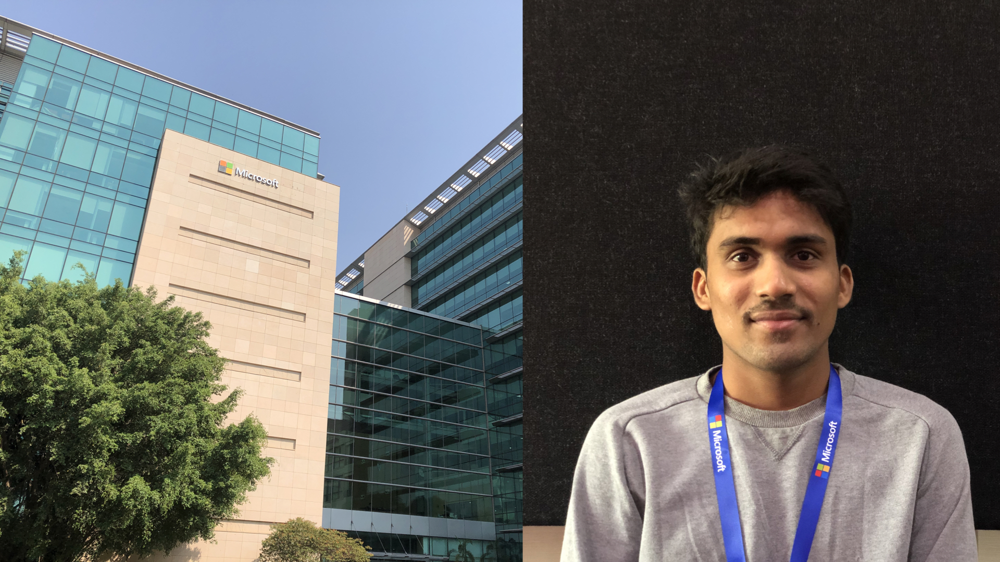

After reaching the hot and humid hyderabad city, the accomodation provided by microsoft was just right necessary.
The first week of the internship was about Onboarding processes and talks. One of the interesting talks was by
a couple of previous interns who became full time employees. They shared their intership experience and gave some tit-bits
about the organisation and work. Microsoft takes a big step in inclusivity and accessibility as an organisation and
I liked the principles and motto of Microsoft. The hyderabad center is called India development center(IDC) and we
felt we are not away from IDC(Industrial design center).

After choosing the project we met the teams and got to know
about them. A group of interns are assigned under Foundry including us. Foundry is a space where microsoft tests their
ambitious and innovative projects apart from other teams. Studio91 takes care of the design space that happens at microsoft
research and innovation. So we were breifed about design work that happens at microsoft by Studio91 folks. Although it happened
after few weeks, Studio91 had a different way of welcoming us. They invited us for the inspire event that happens where designers
from different teams gather and share experiences. Few designers shared their design journey including their inception and the
motivation behind the journey. One interesting thing was this briefing included more 'human' pictures in the slides.
I choose a project which is creating actionable items for sales people on the field from the organisation. I chose this project
because it involved challanges about voice & tone and also building an communication tool. (Certain things are information privacy protected)
I'm not sharing the details of the problem area, But I'll be talking about my design process in the project. I met some of the sales people
and used microsoft research also to conduct my secondary research. After getting the list of problems, with my previous experience of working
on Adaptable cards & Microsoft Teams, I started making some initial prototypes. Adaptable cards have a prototyping tool which let's you immediately
design and see the results and also allows a easier embedding in your Office 365 tools. Working out of Sketch & Figma was a beautiful experience.
The designs were immediately taken to production.
During this first week of the Adaptable cards, I was not assigned with a design mentor but the Product managers and the developers helped me with
everything. They even took me to a movie and I felt that was a nice break. During the second week I was assigned a design manager, Naveed Ahmed.
To my shock, He's an IDC alumni and he was from the same interaction discipline in our school. I met naveed and he said these lines to me "Anjan, I feel the
current project you are working on has less scope for you as a designer. let's put you on a different project". Then I was assigned to a new project
where Microsoft is rolling out Windows Defender to iOS end-points.
The brief was straigtforward about the requirement of the product. The brief was to protect corporate owned iOS Devices and increase visibility
to the security postures of these devices. Altough iOS devices are safe from applications and Insecure coding, there are various network threats
that are vulnerable.I categorized threats based on the behavior types. The most possible threats like Phishing, Malware, ransomware are focused
to be solved. I did a primary research with 7 users from different roles and organisations including designers, developers and business analysts.
I also looked at other competitors trying to address the same problem and I did a secondary research on the pros and cons of each of these products.
I then categorized my research insights into 5 different categories and gave a user quote for each of the insight. I then gave design recommendations
for each of these problems.
Couple of the interesting examples I found out from my secondary research were Snapchat and Microsoft were once a victim of these threats and both
the organisations could not do anything but write an apology to these users. My primiary research involved contextual enquiry with one of my previous
colleauges also as they have moved to Microsoft difital workplace. I consolidated all the Qualitative analaysis and came up with various solutions.
During the 5th week I was also working simultaneously on the Android version of the windows defender. I helped the android version with clear protoypes.
During my primary research following were the questions and goals for which I intended to find insights for:
And my secondary research included several threat reports, cybernews, articles, other products:
The research helped me to find out intereseing problems and restructure the problem statement as: "How do we secure the network activity of
employees on mobile devices and empower the organisations with safe Data & IT operations?". Then I started with looking at different design
guidelines for iOS Devices,
Android Devices,
Fluent design system.
The challenge lies in using these three different languages and coming up with a design language as Windows defender is a new type of product
which lies outside of the fluent guideliens when it comes to mobiles.
Few of the interesting workshops that I attended during the internship inside microsoft are:
Learnings & Takeaways:
Few fun things we did:
During the second week we visited IKEA, Gyan and I cooked for few weeks at the accomidation, I personally had ordered 24 biryanis during my stay at Hyderabad.